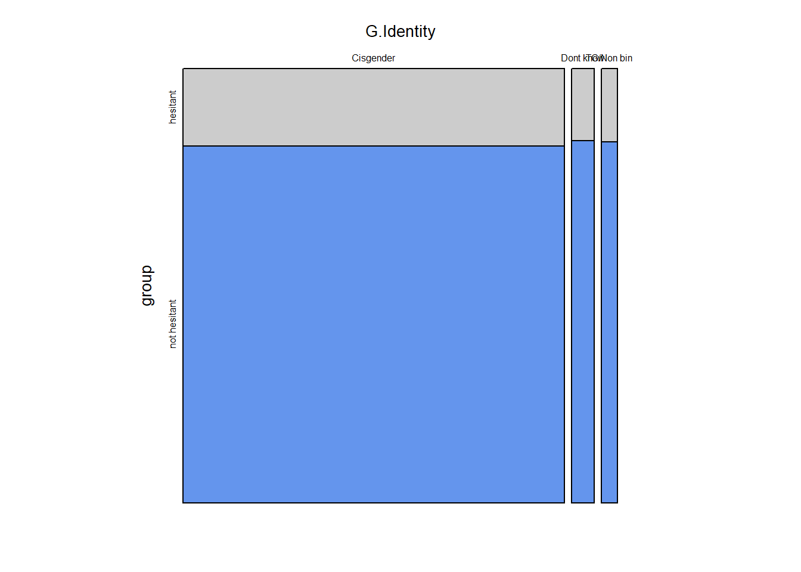
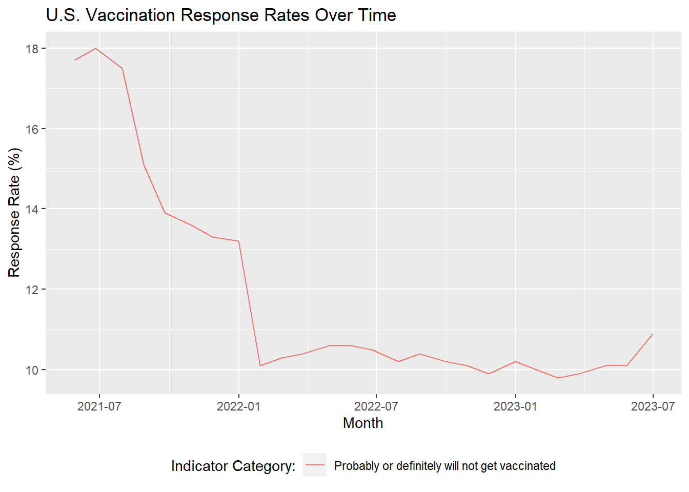
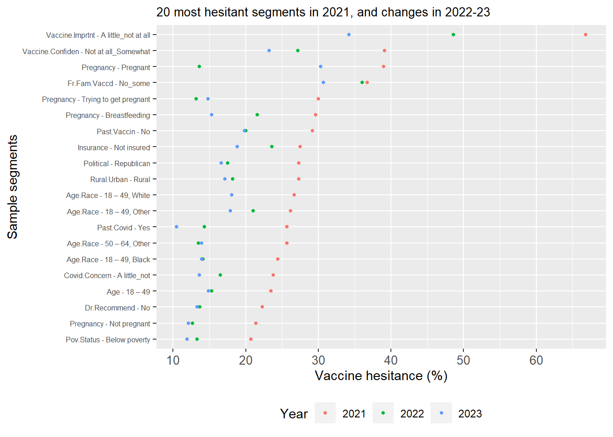
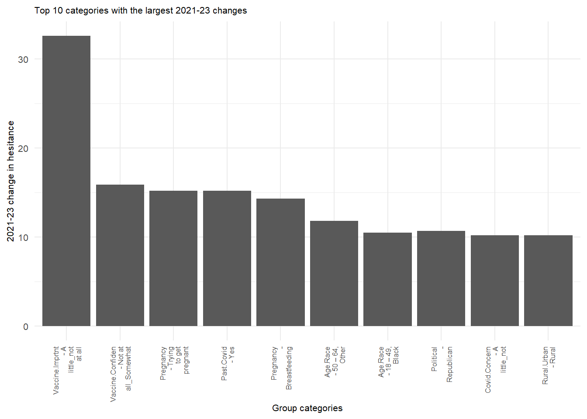

── Attaching core tidyverse packages ──────────────────────── tidyverse 2.0.0 ──
✔ dplyr 1.1.4 ✔ readr 2.1.4
✔ forcats 1.0.0 ✔ stringr 1.5.1
✔ ggplot2 3.4.4 ✔ tibble 3.2.1
✔ lubridate 1.9.3 ✔ tidyr 1.3.0
✔ purrr 1.0.2
── Conflicts ────────────────────────────────────────── tidyverse_conflicts() ──
✖ dplyr::filter() masks stats::filter()
✖ dplyr::lag() masks stats::lag()
ℹ Use the conflicted package (<http://conflicted.r-lib.org/>) to force all conflicts to become errors
Code
library(data.table)
Attaching package: 'data.table'
The following objects are masked from 'package:lubridate':
hour, isoweek, mday, minute, month, quarter, second, wday, week,
yday, year
The following objects are masked from 'package:dplyr':
between, first, last
The following object is masked from 'package:purrr':
transpose
Code
library(vcd)
Loading required package: grid
Code
covid <-fread("../covid_dataset/covid.csv")
3.0.0.1 Part 1: Study which segments of the population exhibited greatest covid vaccine hesitancy following the deployment of mass vaccinations in the US in early 2021.
The national average reported covid hesitance rate during the first quarter of the data collection period (April - June 2021) was 17.7%.
Code
periods_to_combine_2021 =c("April 22 - May 29","May 30 - June 26","June 27 - July 31") national_hesitance_rate = covid%>%filter(`Year`==2021, `Time Period`%in% periods_to_combine_2021, `Group Category`=="All adults age 18+ years", Geography =="National", `Indicator Category`=="Probably or definitely will not get vaccinated") %>%mutate(n_hesitant =round(`Estimate (%)`/100*`Sample Size`,0)) %>%group_by(Geography) %>%summarise(`Sample Size`=sum(`Sample Size`), n_hesitant =sum(n_hesitant)) %>%mutate(`Estimate (%)`= n_hesitant /`Sample Size`*100, `Time Period`="2021 analysis period",Year =2021)
There were significant differences of hesitance by state during this period, from 7.9% in Hawaii, to 33.3% in Wyoming, as illustrated in the map below.
Code
covid_2021_analysis_allstates = covid%>%filter(`Year`==2021, `Time Period`%in% periods_to_combine_2021, `Group Category`=="All adults age 18+ years", `Geography Type`%in%c("Jurisdictional Estimates"), `Indicator Category`=="Probably or definitely will not get vaccinated", !grepl("-",Geography)) %>%mutate(n_hesitant =round(`Estimate (%)`/100*`Sample Size`,0)) %>%group_by(Geography) %>%summarise(`Sample Size`=sum(`Sample Size`), n_hesitant =sum(n_hesitant)) %>%mutate(`Estimate (%)`= n_hesitant /`Sample Size`*100, `Time Period`="2021 analysis period",Year =2021) #Karl to add map code here, using covid_2021_analysis_allstates%`Estimate (%)` for heatmap
The histogram and boxplot below shows that there are no clear outliers, even though over 50% of states fall outside the 1st and 3rd quartile.
Code
ggplot(covid_2021_analysis_allstates, aes(x =`Estimate (%)`)) +geom_histogram(binwidth =5, fill ="blue", color ="black", alpha =0.7) +geom_boxplot() +labs(title ="State distribution of hesitance", x ="Hesitance %", y ="No. of states")
Nationally, it can be seen that the following 10 segments demonstrated the highest vaccine hesitance rates in the period in question.
Code
group_name_shortening <-c("Sex"="Sex","Age"="Age","Race/Ethnicity (7 level)"="Race","Age by race/ethnicity"="Age.Race","Sexual orientation"="S.Orientation","Gender identity"="G.Identity","Metropolitan statistical area"="Rural.Urban","Born in the U.S."="US.Born","Language of interview"="Language","Poverty status"="Pov.Status","Insurance status"="Insurance","Social Vulnerability Index (SVI) of county of residence"="SVI","Political leaning of county of residence"="Political","Received non-COVID-19 vaccine(s) in past two years"="Past.Vaccin","Health condition associated with higher risk for COVID-19 (any)"="Comorbidity","Disability status (any)"="Disability","Pregnancy status (females age 18 – 49 years)"="Pregnancy","Ever had COVID-19 disease (self-report)"="Past.Covid","Concern about getting COVID-19 disease"="Covid.Concern","Confidence in COVID-19 vaccine safety"="Vaccine.Confiden","Confidence that COVID-19 vaccine is important"="Vaccine.Imprtnt","Healthcare provider recommended I get a COVID-19 vaccine"="Dr.Recommend","COVID-19 vaccination status of friends and family"="Fr.Fam.Vaccd","Work or school requires COVID-19 vaccination"="Work.School")group_cat_shortening =c("18 – 49 years"="18 – 49","50 – 64 years"="50 – 64","65+ years"="65+","18 – 49 years, Black, non-Hispanic"="18 – 49, Black","18 – 49 years, Hispanic"="18 – 49, Hispanic","18 – 49 years, Other or multiple races, non-Hispanic"="18 – 49, Other","18 – 49 years, White, non-Hispanic"="18 – 49, White","50 – 64 years, Black, non-Hispanic"="50 – 64, Black","50 – 64 years, Hispanic"="50 – 64, Hispanic","50 – 64 years, Other or multiple races, non-Hispanic"="50 – 64, Other","50 – 64 years, White, non-Hispanic"="50 – 64, White","65+ years, Black, non-Hispanic"="65+, Black","65+ years, Hispanic"="65+, Hispanic","65+ years, Other or multiple races, non-Hispanic"="65+, Other","65+ years, White, non-Hispanic"="65+, White","Born in the U.S."="US Born","Not born in the U.S."="Not US Born","Many or almost all family or friends have received vaccine"="Many","Some or no family or friends have been vaccinated"="No_some","A little or not at all concerned"="A little_not","Very or moderately concerned"="Very_Moderately","Somewhat or not at all safe for me"="Not at all_Somewhat","Very or completely safe for me"="Very","A little or not at all important to protect me from COVID-19"="A little_not at all","Somewhat or very important to protect me from COVID-19"="Somewhat_very","No"="No","Yes"="Yes","Cisgender"="Cisgender","Don't know/refused"="Dont know","Transgender/Non-binary"="TG/Non bin","Insured"="Insured","Not insured"="Not insured","English"="English","Other"="Other","Spanish"="Spanish","Rural"="Rural","Suburban"="Suburban","Urban"="Urban","Democrat-leaning"="Democrat","Not Democrat-leaning or Republican-leaning"="None","Republican-leaning"="Republican","Above poverty, income <$75k"="<$75k","Above poverty, income >=$75k"=">=$75k","Below poverty"="Below poverty","Unknown income"="Unknown","Breastfeeding"="Breastfeeding","Not pregnant, trying to get pregnant, or breastfeeding"="Not pregnant","Pregnant"="Pregnant","Trying to get pregnant"="Trying to get pregnant","American Indian/Alaska Native, non-Hispanic"="Native","Asian, non-Hispanic"="Asian","Black, non-Hispanic"="Black","Hispanic"="Hispanic","Native Hawaiian/Pacific Islander, non-Hispanic"="Pacific","Other or multiple races, non-Hispanic"="Other","White, non-Hispanic"="White","Female"="Female","Male"="Male","Gay/Lesbian/Bisexual/Other"="LGB","Heterosexual/Straight"="Hetero","High SVI"="High","Low SVI"="Low","Moderate SVI"="Moderate","SVI unknown"="Unknown","Not applicable/unemployed"="Unemployed")group_name_toloop =c("Sex","Age","Race/Ethnicity (7 level)","Age by race/ethnicity","Sexual orientation","Gender identity","Metropolitan statistical area","Born in the U.S.", "Language of interview","Poverty status", "Insurance status","Social Vulnerability Index (SVI) of county of residence", "Political leaning of county of residence", "Received non-COVID-19 vaccine(s) in past two years", "Health condition associated with higher risk for COVID-19 (any)","Disability status (any)", "Pregnancy status (females age 18 – 49 years)", "Ever had COVID-19 disease (self-report)","Concern about getting COVID-19 disease", "Confidence in COVID-19 vaccine safety", "Confidence that COVID-19 vaccine is important", "Healthcare provider recommended I get a COVID-19 vaccine", "COVID-19 vaccination status of friends and family","Work or school requires COVID-19 vaccination" )group_name_toloop_short =lapply(group_name_toloop, function(x) ifelse(x %in%names(group_name_shortening), group_name_shortening[[x]], x))covid_2021_analysis = covid%>%filter(`Year`==2021, `Time Period`%in% periods_to_combine_2021, `Group Name`%in% group_name_toloop, `Geography Type`%in%c("Jurisdictional Estimates","National Estimates"), `Indicator Category`=="Probably or definitely will not get vaccinated", !grepl("-",Geography)) %>%mutate(n_hesitant =round(`Estimate (%)`/100*`Sample Size`,0)) %>%group_by(pick(c(1:6))) %>%summarise(`Sample Size`=sum(`Sample Size`), n_hesitant =sum(n_hesitant)) %>%filter(Geography =="National") %>%mutate(`Estimate (%)`= n_hesitant /`Sample Size`*100, `Time Period`="2021 analysis period",Year =2021)
`summarise()` has grouped output by 'Geography Type', 'Geography', 'Group
Name', 'Group Category', 'Indicator Name'. You can override using the `.groups`
argument.
Analysing 10 states with the highest and lowest hesitance, the parallel coordinate plots below will review geographical patterns in segments of the population with the highest hesitance.
#Karl to add parallel coordinate plots here and commentary using top_10_highest_hesitance_cat_list
Given the inconsistent trends seen across states and group categories with the highest hesitance, we proceeded to conduct chi squared tests on every group name defined within the scope of this exercise [link back to data.qmd] to determine those with the highest statistical significance.
Code
get_chi_sq<-function(df,geography,time_period,year,group_name,hesitant_group) { temp = df |>filter(Geography == geography,`Indicator Name`=="Vaccination uptake and intention", `Time Period`== time_period,Year == year, `Group Name`==group_name) |>mutate(hesitant =ifelse(`Indicator Category`%in% hesitant_group,1,0)) |>group_by(`Group Category`,hesitant) |>summarise(hesitance_rate =sum(`Estimate (%)`),sample_size =first(`Sample Size`)) |>mutate(n_hesitance =round(hesitance_rate/100* sample_size,0)) |>filter(hesitant ==1) |>select(`Group Category`,n_hesitance,sample_size) if (nrow(temp) >0) { expected_proportion =sum(temp$n_hesitance)/sum(temp$sample_size) temp = temp |>mutate(expected = sample_size*expected_proportion) res =chisq.test(x=temp$n_hesitance,p=temp$expected/sum(temp$expected)) output<-list(round(res$statistic,digits =0),res$p.value) }else { output<-list(0,0) }return(output)}group_name_toloop =c("Sex","Age","Race/Ethnicity (7 level)","Age by race/ethnicity","Sexual orientation","Gender identity","Metropolitan statistical area","Born in the U.S.", "Language of interview","Poverty status", "Insurance status","Social Vulnerability Index (SVI) of county of residence", "Political leaning of county of residence", "Received non-COVID-19 vaccine(s) in past two years", "Health condition associated with higher risk for COVID-19 (any)","Disability status (any)", "Pregnancy status (females age 18 – 49 years)", "Ever had COVID-19 disease (self-report)","Concern about getting COVID-19 disease", "Confidence in COVID-19 vaccine safety", "Confidence that COVID-19 vaccine is important", "Healthcare provider recommended I get a COVID-19 vaccine", "COVID-19 vaccination status of friends and family","Work or school requires COVID-19 vaccination" )group_name_toloop_short =lapply(group_name_toloop, function(x) ifelse(x %in%names(group_name_shortening), group_name_shortening[[x]], x))result_df2 <-data.frame(matrix(ncol =3, nrow =0))colnames(result_df2) <-c("group_name", "X2_test_stat", "p_value")for (x in group_name_toloop_short) { res =get_chi_sq(covid_2021_analysis,geography="National",time_period ="2021 analysis period",year=2021,group_name=x,hesitant_group =c("Probably or definitely will not get vaccinated")) result_df2[nrow(result_df2) +1,] =c(x,res[1],res[2])}
`summarise()` has grouped output by 'Group Category'. You can override using
the `.groups` argument.
`summarise()` has grouped output by 'Group Category'. You can override using
the `.groups` argument.
`summarise()` has grouped output by 'Group Category'. You can override using
the `.groups` argument.
`summarise()` has grouped output by 'Group Category'. You can override using
the `.groups` argument.
`summarise()` has grouped output by 'Group Category'. You can override using
the `.groups` argument.
`summarise()` has grouped output by 'Group Category'. You can override using
the `.groups` argument.
`summarise()` has grouped output by 'Group Category'. You can override using
the `.groups` argument.
`summarise()` has grouped output by 'Group Category'. You can override using
the `.groups` argument.
`summarise()` has grouped output by 'Group Category'. You can override using
the `.groups` argument.
`summarise()` has grouped output by 'Group Category'. You can override using
the `.groups` argument.
`summarise()` has grouped output by 'Group Category'. You can override using
the `.groups` argument.
`summarise()` has grouped output by 'Group Category'. You can override using
the `.groups` argument.
`summarise()` has grouped output by 'Group Category'. You can override using
the `.groups` argument.
`summarise()` has grouped output by 'Group Category'. You can override using
the `.groups` argument.
`summarise()` has grouped output by 'Group Category'. You can override using
the `.groups` argument.
`summarise()` has grouped output by 'Group Category'. You can override using
the `.groups` argument.
`summarise()` has grouped output by 'Group Category'. You can override using
the `.groups` argument.
`summarise()` has grouped output by 'Group Category'. You can override using
the `.groups` argument.
`summarise()` has grouped output by 'Group Category'. You can override using
the `.groups` argument.
`summarise()` has grouped output by 'Group Category'. You can override using
the `.groups` argument.
`summarise()` has grouped output by 'Group Category'. You can override using
the `.groups` argument.
`summarise()` has grouped output by 'Group Category'. You can override using
the `.groups` argument.
`summarise()` has grouped output by 'Group Category'. You can override using
the `.groups` argument.
`summarise()` has grouped output by 'Group Category'. You can override using
the `.groups` argument.
Two illustrative mosaic plots are shown below to confirm the chi square test result above - one for the group name with the higest X2 score (the segment that felt vaccines were important), and one for the lowest (gender identity).
# A tibble: 4 × 4
Vaccine.Imprtnt `Sample Size` group Freq
<chr> <int> <chr> <dbl>
1 A little_not at all 28357 hesitant 19088
2 A little_not at all 28357 not hesitant 9269
3 Somewhat_very 175006 hesitant 6501
4 Somewhat_very 175006 not hesitant 168505
Code
mosaic_2var(covid_2021_analysis,"G.Identity",100)

# A tibble: 6 × 4
G.Identity `Sample Size` group Freq
<chr> <int> <chr> <dbl>
1 Cisgender 186524 hesitant 33215
2 Cisgender 186524 not hesitant 153309
3 Dont know 11179 hesitant 1864
4 Dont know 11179 not hesitant 9315
5 TG/Non bin 8087 hesitant 1371
6 TG/Non bin 8087 not hesitant 6716
It can be clearly seen that those that saw a vaccine as important had significantly lower hesitance than those that did not. However, for the group name with the lowest X2 score (gender identity), the observed and expected mosaic plots are nearly identical, thus confirming the X2 test result.
[add commentary on results]
3.0.0.2 Part 2: Analyze which segments showed the greatest reduction in covid vaccine hesitancy between 2021 and 2023
We have already illustrated that national vaccine hesitance declined from around 18% in April/May 2021 to around 11% in June/July 2023.
Code
# Filter for the vaccination uptake and intent indicator# Filter for responses corresponding to vaccine hesitancy# Include all adults 18+# Set time period to monthly (excluding weekly samples) and filter for nationwide samplesvacc_intention_time <- covid |>filter(`Indicator Name`=='Vaccination uptake and intention') |>filter(`Indicator Category`=='Probably or definitely will not get vaccinated') |>filter(`Group Name`=='All adults 18+') |>filter(`Time Type`=='Monthly') |>filter(Geography =='National') |>arrange(`Geography Type`, Geography, `Time Period`)# Derive month of data collectionvacc_intention_time <- vacc_intention_time |>mutate(month_split =paste0(str_split(`Time Period`, "-",simplify =TRUE)[, 2],", ", Year),month =mdy(month_split))# Plot hesitancy over timeggplot(vacc_intention_time, aes(x = month, y =`Estimate (%)`,color =`Indicator Category`)) +geom_line() +labs(title ="U.S. Vaccination Response Rates Over Time",x ="Month",y ="Response Rate (%)") +theme(legend.position ="bottom") +guides(color =guide_legend(title ="Indicator Category:"))

However, some segments of the population demonstrated more decline in hesitance than others. The Cleveland dot plot below shows the change in hesitance by population segment, for the 20 most hesitant segments in 2021.
Code
annual_monthly_snapshots =c("April 22 - May 29","May 1 - May 28","April 30 - May 27")snapshots = covid %>%filter(`Time Period`%in% annual_monthly_snapshots,`Group Name`%in% group_name_toloop, Geography =="National",`Indicator Category`=="Probably or definitely will not get vaccinated" ) %>%mutate(Year =as.factor(Year)) %>%mutate_at(vars(`Group Name`), ~recode(., !!!group_name_shortening)) %>%mutate_at(vars(`Group Category`), ~recode(., !!!group_cat_shortening)) %>%mutate(rows =paste(`Group Name`, `Group Category`, sep =" - ")) %>%select(rows,Year,`Estimate (%)`) %>%arrange(rows, Year) row_order = snapshots %>%pivot_wider(names_from = Year, values_from =`Estimate (%)`) %>%drop_na(`2021`) %>%drop_na(`2023`) %>%mutate(decline_21_23 =`2021`-`2023`) %>%arrange((decline_21_23))row_order_list_chg_21_23 =c(row_order$rows)row_order_list_2021 = row_order %>%arrange(`2021`) %>%top_n(20,`2021`) %>%select(rows)row_order_list_2021 = row_order_list_2021$rows row_order_list_2023 =c(row_order %>%arrange((`2023`)) %>%select(rows))snapshots = snapshots[snapshots$rows %in% row_order_list_chg_21_23, ]snapshots %>%filter(rows %in% row_order_list_2021) %>%ggplot(aes(x =`Estimate (%)`, y =fct_relevel(rows,(row_order_list_2021)), color = Year)) +geom_point(size =1) +labs(title ="20 most hesitant segments in 2021, and changes in 2022-23", x ="Vaccine hesitance (%)", y ="Sample segments") +theme(legend.position ="bottom",axis.text.x =element_text(size =10), axis.text.y =element_text(size =6), plot.title =element_text(size =10))

It can be seen from the cleveland dot plot below that the change in hesitance of the top 20 most hesitant segments in 2021 varies by group. The bar graph below shows the 10 segments that demonstrated the largest changes in hesitance.
Code
#barplot of changelibrary(stringr)row_order$rows =str_wrap(row_order$rows, width =10)row_order %>%top_n (10, decline_21_23) %>%ggplot(aes(x =fct_reorder(rows,rev(decline_21_23)), y = decline_21_23)) +geom_bar(stat ="identity")+labs(title ="Top 10 categories with the largest 2021-23 changes", x ="Group categories", y ="2021-23 change in hesitance") +theme_minimal() +theme(axis.text.x =element_text(angle =90, vjust =0.5, hjust=1,size=6),axis.text.y =element_text(size=8),axis.title =element_text(size =8),plot.title =element_text(size =8))

The change in hesitance also varies by state:
#Karl to add
3.0.0.3 Part 3: Based on the findings above, we will propose high-level recommendations for segments of the population that need further public health interventions.
Provide a short nontechnical summary of the most revealing findings of your analysis written for a nontechnical audience. Take extra care to clean up your graphs, ensuring that best practices for presentation are followed, as described in the audience ready style section below.
Use subheadings (##) as appropriate. See Todd Schneider’s blog posts for examples of thoughtful, informative subheadings. An approach that works well is to create a subheading for each of your research questions.
The number of graphs will vary by project; we suggest a target of 10. (A plot with multiple facets counts as 1 graph). If you go over, make sure they are high quality and include commentary. A project with 10 good graphs plus commentary will receive a better grade than a project with 10 good graphs and 10 mediocre ones.